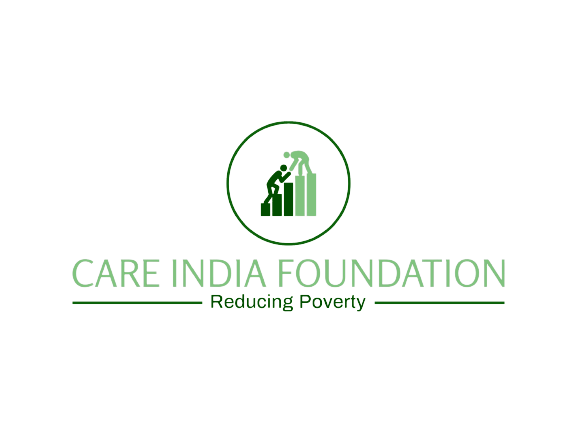

:
☰ Side Bar

Care India Foundation is a charity, run by a team of volunteers who are committed to providing educational opportunities and to promote the welfare of children in India. Care India Foundation has been working in India, concentrating on lightening neediness and social treachery. We do this through very much arranged and far reaching programs in wellbeing, training, jobs and catastrophe readiness and reaction. Our general objective is the strengthening of ladies and young ladies from poor and underestimate groups prompting change in their lives and occupations. Where all individuals live with respect and security.
WHAT WE DO
A) The objects of the trust shall be within the meaning of charitable purposes as defined under 2(15) of the Income Tax Act 1961 or any other direct tax law or any other legislation applicable from time to time so as to continue to be treated as public charitable trust.
B) To do work for welfare of women & children and to take such projects that relates to such welfare.
C) To generate the employment, especially in the field of Information Technology.
D) The trust shall work towards betterment of the Society without any distinction of caste, creed, color or religion in the field of education, medical relief, and protectior of eco-system, relief to the poor and any other objective of general public utility.
E) To render help to all kinds of needy and indigent people and handicapped people.
F) To construct the Dharamshala, to construct the piyaoo, to construct cow-shed and animal shed,constructold
G) To propagate education by increasing the standards of education from low level to higher level education, construct and/or conduct the school, colleges, training centre and hostels. To construct and/or conduct medical, technical. Veterinary, Ayurvedic, homeopathic colleges and to administer them.
H) To arrange medicine and food for poor, needy and suffering people. Make available medical Facility, where needed.
I) To organize programme for Self Employment for poor, needy and unemployed, to conduct the training
J) To help and provide subsidy and scholarship to scholars, researchers and students and to render such help for further education to the needy and poor people.
K) Help sages, poor, needy, widows handicapped and other similarly placed people for food, shelter and financial assistance.
L) To appointment teachers, doctors and other employees for fulfillmen of the aims of Trust. Trust shall have the rights to dismiss any employee, if he/she proves unable to discharge his duties to the entire satisfaction of needy people.
M) To promote sports among the people by providing all the facilities, like stadium, equipment, dresses, training and sponsor them by encouraging participation at all levels.
N) To Help of Good Environment an Plantation of tree
 Home
Home
 About us
About us
 Certificates
Certificates
 Services
Services
 Contact
Contact
 Member
Member
 Gallery
Gallery
 Volunteers
Volunteers
 Donation
Donation